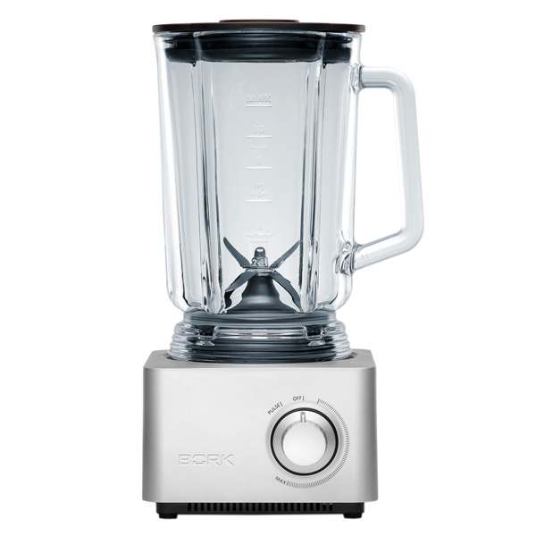
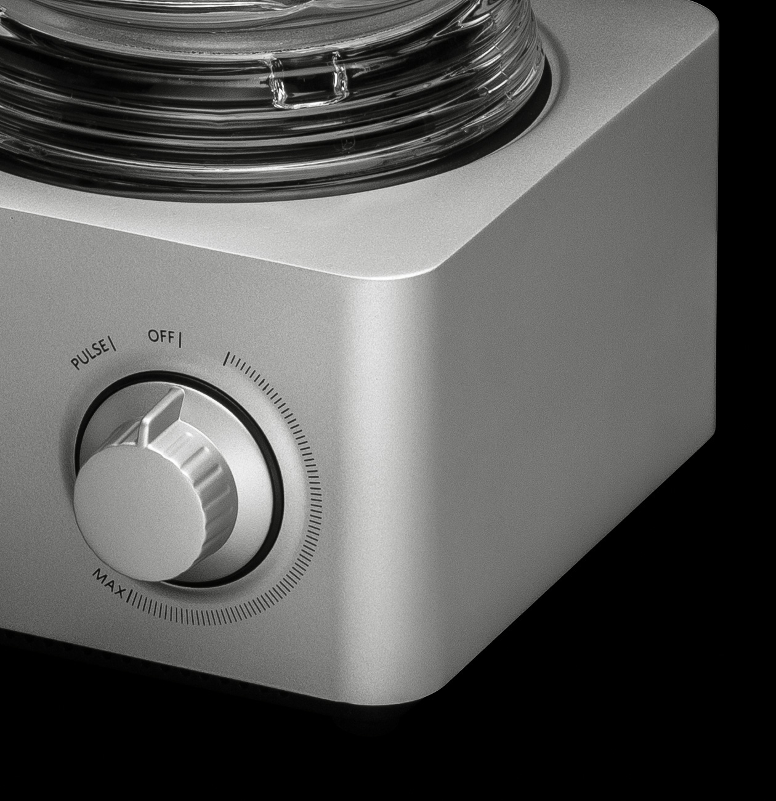
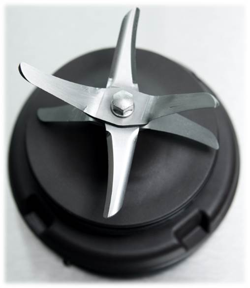
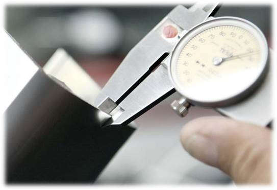
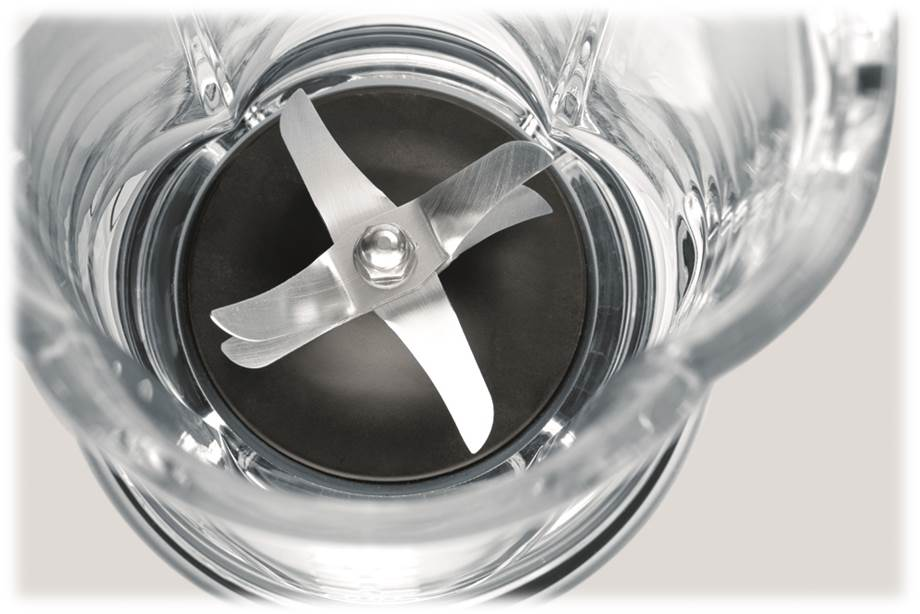
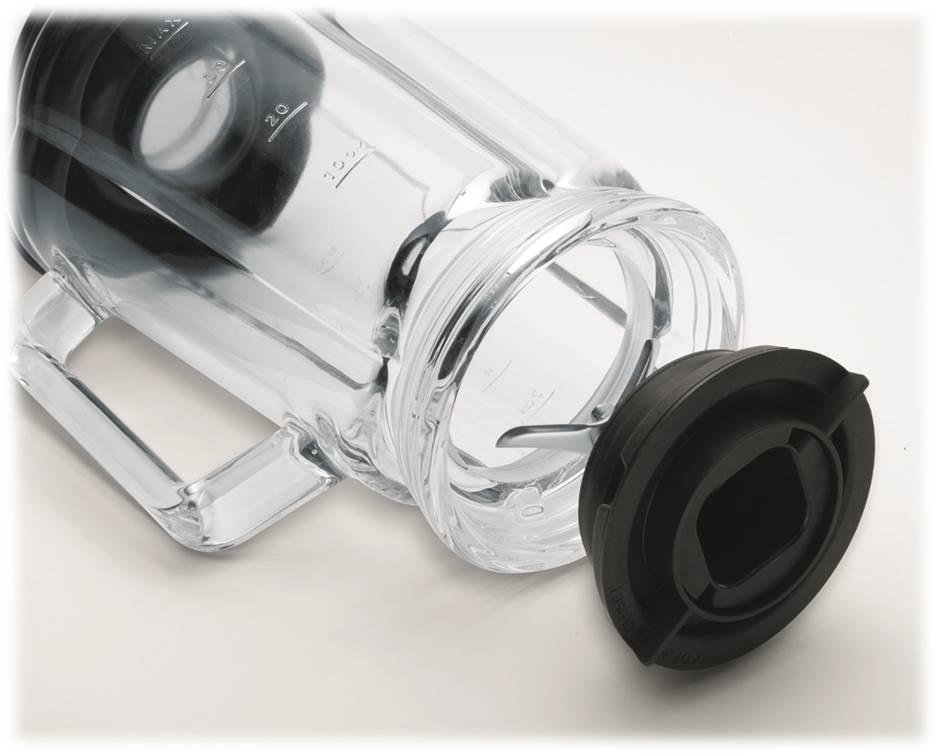
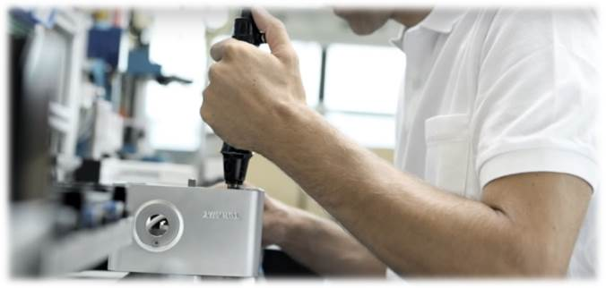

Блендер стационарный BORK B780
Гарантирует высочайшее качество смешивания благодаря специально разработанным фирменным ножам с шестью лезвиями и уникальной колбе в форме клевера. Имеет ультракомпактный двигатель и самую низкую базу среди аналогов.
Ключевые особенности
- Блок лезвий 6D
- Ультракомпактный двигатель и корпус
- Материал колбы боросиликатное стекло
- Уникальна форма чаши в виде клевера
- Уровень шума ниже 75 дБ
- Лёгкая очистка блендера
- Защита от включения без чаши
Блок лезвий 6D
Ультракомпактный двигатель и корпус
Благодаря своей продуманной конструкции данный блендер сочетает в себе компактный размер и высокую производительность, а цельнометаллический корпус позволяет снизить уровень шума и вибрации. Основание блендера также оснащено удобным отсеком для смотки шнура.
Уникальная форма и материал чаши
Элегантный кувшин из термостойкого боросиликатного стекла. Материал экологически чистый и не подвержен царапинам. Дизайн кувшина имеет форму клевера, что обеспечивает эффект «циклона» при работе, как следствие лучшее измельчение и перемешивание ингредиентов.
Лёгкая очистка блендера
Очистка блендера не составит труда.
Для легкой чистки налейте в кувшин блендера воду с небольшим количеством мягкого моющего средства и включите на несколько секунд. Затем повторите с чистой водой.
Для снятия ножевого блока поверните против часовой стрелки нижнее кольцо и аккуратно извлеките блок.
Чашу, крышку и мерный стаканчик можно мыть в посудомоечной машине.
Технические характеристики

Мощность: 450 Вт
Количество оборотов: 25 000 об/мин
Габариты (В х Ш х Г): 330 х 155 х 170 мм
Вес: 4,7 кг
Длина шнура: 1 метр
Сделано в Швейцарии